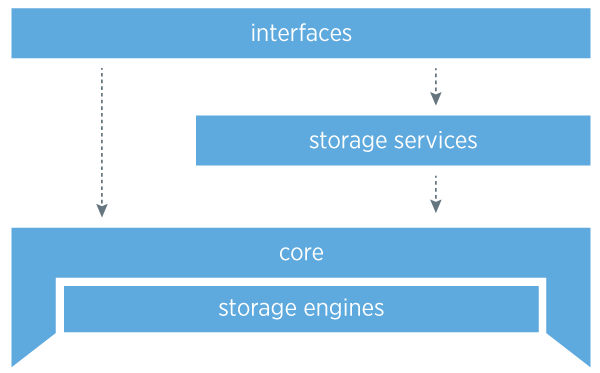
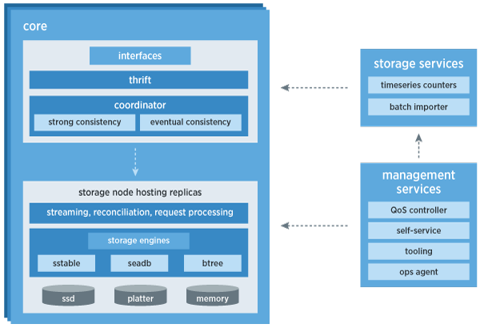

manhattan
Table of Contents
1 manhattan
1.1 Manhattan, our real-time, multi-tenant distributed database for Twitter scale
1.2 Layers

1.3 Core
- The core is the most critical aspect of the storage system: it is highly stable and robust. It handles failure, eventual consistency, routing, topology management, intra- and inter-datacenter replication, and conflict resolution. Within the core of the system, crucial pieces of architecture are completely pluggable so we can iterate quickly on designs and improvements, as well as unit test effectively.
- Operators are able to alter the topology at any time for adding or removing capacity, and our visibility and strong coordination for topology management are critical. We store our topology information in Zookeeper because of it’s strong coordination capabilities and because it is a managed component in our infrastructure at Twitter, though Zookeeper is not in the critical path for reads or writes.
- We also put a lot of effort into making sure we have extreme visibility into the core at all times with an extensive set of Ostrich metrics across all hosts for correctness and performance.
1.4 Consistency model
- Many of Twitter’s applications fit very well into the eventually consistent model. We favor high availability over consistency in almost all use cases, so it was natural to build Manhattan as an eventually consistent system at its core.
- However, there will always be applications that require strong consistency for their data so building such a system was a high priority for adopting more customers. Strong consistency is an opt-in model and developers must be aware of the trade-offs. In a strongly consistent system, one will typically have a form of mastership for a range of partitions.
1.5 Achieving consistency
- To achieve consistency in an eventually consistent system you need a required mechanism which we call replica reconciliation. This mechanism needs to be incremental, and an always running process that reconciles data across replicas. It helps in the face of bitrot, software bugs, missed writes (nodes going down for long periods of time) and network partitions between datacenters.
- In addition to having replica reconciliation, there are two other mechanisms we use as an optimization to achieve faster convergence: read-repair, which is a mechanism that allows frequently accessed data to converge faster due to the rate of the data being read, and hinted-handoff, which is a secondary delivery mechanism for failed writes due to a node flapping, or being offline for a period of time.
1.6 Storage engines
- seadb, our read-only file format for batch processed data from hadoop
- sstable, our log-structured merge tree based format for heavy write workloads
- btree, our btree based format for heavy read, light write workloads
- All of our storage engines support block-based compression.
1.7 Storage Services

We have created additional services that sit on top of the core of Manhattan that allow us to enable more robust features that developers might come to expect from traditional databases. Some examples are:
- Batch Hadoop importing.
- One lesson we learned from our customers was that they tend to produce large, multi-terabyte datasets where each subsequent version typically changes less than 10-20% of their data.
- We baked in an optimization to reduce network bandwidth by producing binary diffs that can be applied when we download this data to replicas, substantially reducing the overall import time across datacenters.
- Strong Consistency service
- The Strong Consistency service allows customers to have strong consistency when doing certain sets of operations.
- We use a consensus algorithm paired with a replicated log to guarantee in-order events reach all replicas. This enables us to do operations like Check-And-Set (CAS), strong read, and strong write.
- We support two modes today called LOCAL_CAS and GLOBAL_CAS. Global CAS enables developers to do strongly consistent operations across a quorum of our datacenters, whereas a Local CAS operation is coordinated only within the datacenter it was issued.
- Both operations have different tradeoffs when it comes to latency and data modeling for the application.
- Timeseries Counters service
1.8 Interfaces
The interface layer is how a customer interacts with our storage system. Currently we expose a key/value interface to our customers, and we are working on additional interfaces such as a graph based interface to interact with edges.
1.9 Multi-Tenancy and QoS (Quality of Service)
Supporting multi-tenancy — allowing many different applications to share the same resources — was a key requirement from the beginning. In previous systems we managed at Twitter, we were building out clusters for every feature. This was increasing operator burden, wasting resources, and slowing customers from rolling out new features quickly.
As mentioned above, allowing multiple customers to use the same cluster increases the challenge of running our systems. We now must think about isolation, management of resources, capacity modeling with multiple customers, rate limiting, QoS, quotas, and more.
We monitor and, if needed, throttle resource usage across many metrics to ensure no one application can affect others on the system. Rate limiting happens not at a coarse grain but at a subsecond level and with tolerance for the kinds of spikes that happen with real world usage.